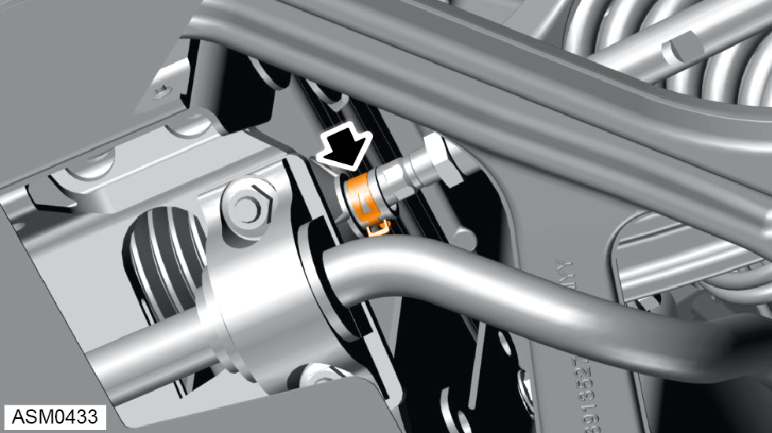
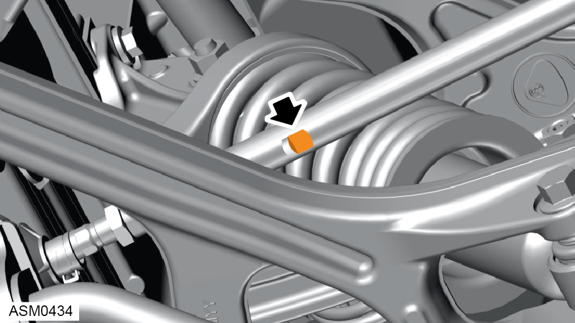
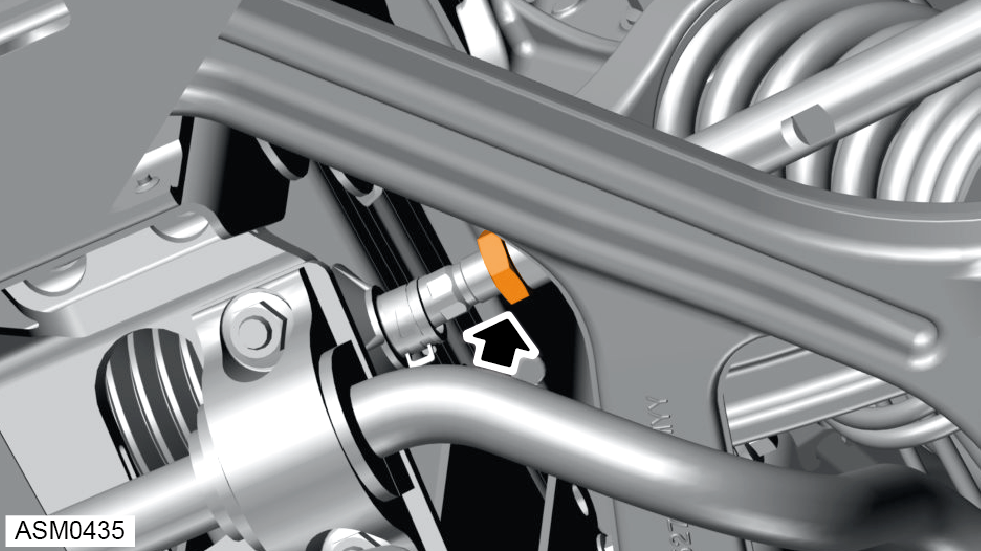
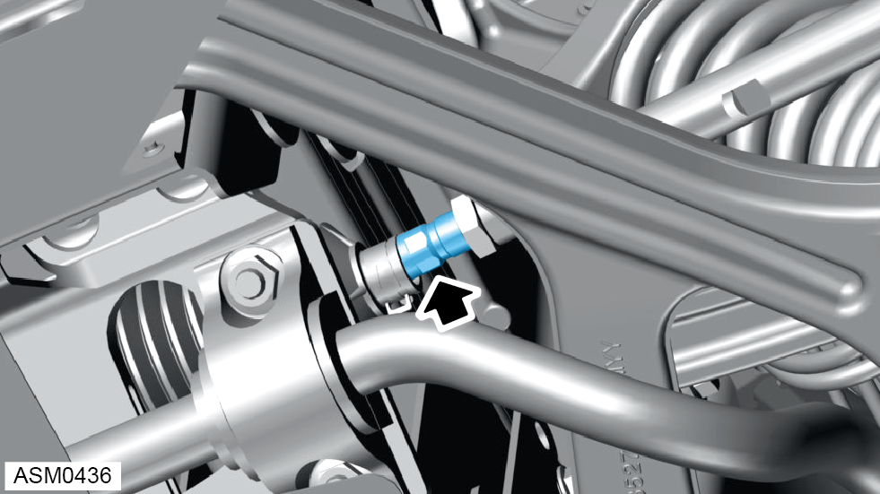

Front Wheel Steering Rack Alignment
Print
Operation Code: 32.03.16-00
Front Wheel Steering Rack Adjustment
- Perform a full front and rear suspension geometry inspection. Refer to procedure.
- Refer to technical data for wheel alignment specifications.
NOTE: Make sure steering wheel is in straight ahead position before performing any adjustment.
- Raise vehicle on 4 post ramp.

- Release tension on steering rack gaiter clamp.

- Hold track rod end using flats machined into track rod end body.
 CAUTION: When slackening or tightening the track rod locknuts, it is important that the torque reaction is resisted
using the track rod flats and that the ball joint itself is not allowed to be stressed.
CAUTION: When slackening or tightening the track rod locknuts, it is important that the torque reaction is resisted
using the track rod flats and that the ball joint itself is not allowed to be stressed.

- Loosen nut securing track rod end to steering rack.
NOTE: Repeat step for opposite side of steering rack.

- Adjust steering rack with flats on adjuster until wheel alignment value is within tolerance.
- Tighten nut securing track rod end to steering rack. Torque 45 Nm.
- Refit steering rack gaiter clamp.
- Repeat procedure for opposite side of steering rack.